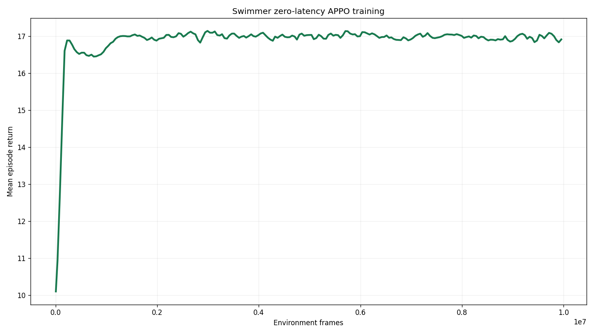
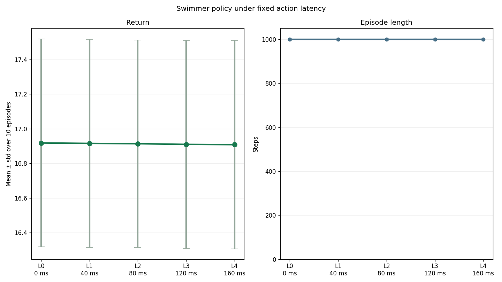
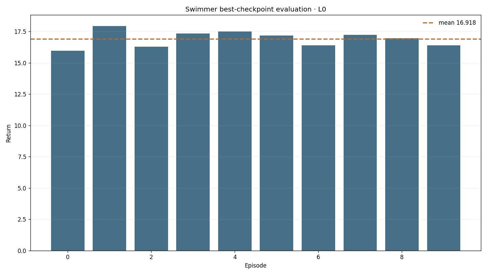
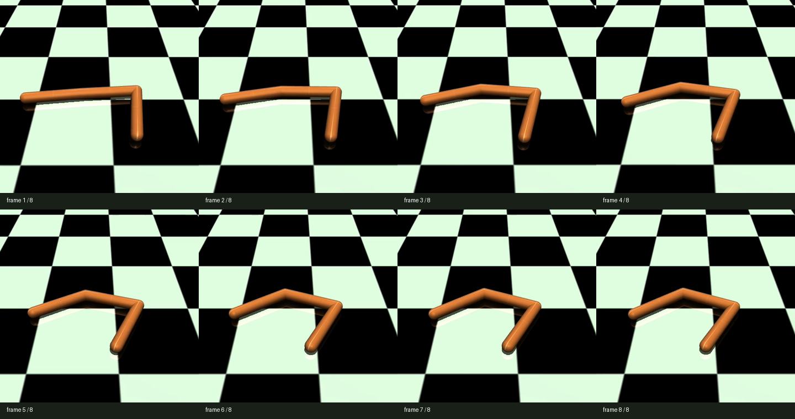

Runtime probe
Gymnasium 0.29.1 and MuJoCo 3.3.7 construct the task and render 480×480 RGB through NVIDIA EGL.
placeholder / verified Gymnasium adaptation
A task-owned wrapper preserves Swimmer-v4's native continuous action and ordered eight-dimensional state while removing one obsolete MuJoCo 2 XML option. The runtime and latency pipeline work, but the completed APPO policy converges to a low-return solution.
01 · Outcome
Gymnasium 0.29.1 and MuJoCo 3.3.7 construct the task and render 480×480 RGB through NVIDIA EGL.
Asynchronous APPO completed 10,006,528 zero-latency frames with a four-frame policy observation.
The best checkpoint completed L0–L4, ten deterministic 1,000-step episodes per latency.
No teacher rollout, conversion, or VLA training is claimed because the small model is not a strong teacher.
02 · Frozen contract
LatencyBench/SwimmerContinuous-v0, based on Gymnasium Swimmer-v4.Box(-inf, inf, (8,), float64); policy observation: four stacked states, 32 values.Box(-1, 1, (2,), float32), first rotor then second rotor.dt=0.04 s, frame skip 4, model timestep 0.01 s.hold with FIFO action ordering.collision="predefined" option rejected by MuJoCo 3.03 · Small-model training
The run uses asynchronous APPO, four stacked observations, a 64×64 tanh MLP, rollout 64, batch 1024, two epochs, learning rate 0.00295 with linear decay, normalized observations and returns, and value_bootstrap=false. These choices match the consequential parts of the published Sample Factory Swimmer setup except for the training seed and the latency-bench environment integration.

PATH=/path/to/user/miniconda3/envs/latency/bin:$PATH \
MUJOCO_GL=egl PYOPENGL_PLATFORM=egl PYTHONPATH=. \
python -m training.train \
--config configs/examples/gymnasium/swimmer/small_model_train.yamlBest checkpoint: best_000005288_2707456_reward_17.123.pth. Final checkpoint: checkpoint_000019544_10006528.pth.
04 · Closed-loop latency-bench evaluation



PATH=/path/to/user/miniconda3/envs/latency/bin:$PATH \
MUJOCO_GL=egl PYOPENGL_PLATFORM=egl PYTHONPATH=. \
python -m latency_bench.run \
--config configs/examples/gymnasium/swimmer/small_model_eval.yaml \
--checkpoint-path /path/to/mount/placeholder/small_models/swimmer/gymnasium_swimmer_rgb_state_zero_latency_10m/checkpoint_p0/best_000005288_2707456_reward_17.123.pth05 · Evidence
media builder · focused Swimmer and adjacent MuJoCo contract tests pass locally
Environment facts follow the version-matched Gymnasium Swimmer-v4 documentation. The comparison target comes from the vendored Sample Factory Swimmer record.
06 · Limits and next experiment
mujoco_swimmer.